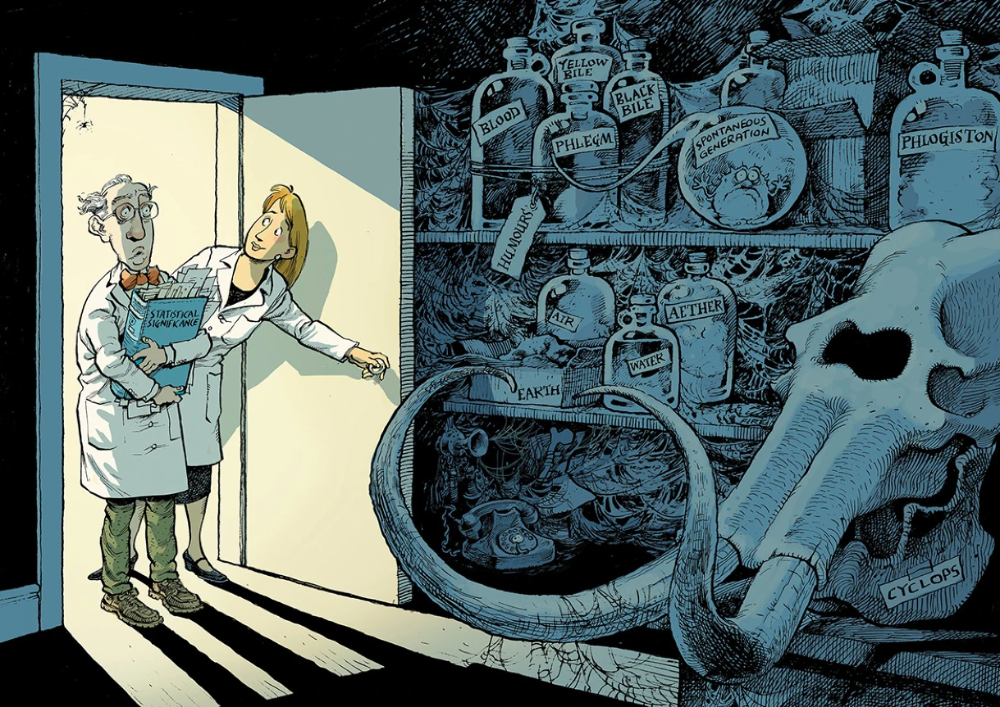

Lessons in Statistical Thinking
Preface
Note to students in Math 300
Up to now, you have been using the OpenIntro textbook. We will not be continuing into Block III of OpenIntro, but will replace it with the lessons in this little book.
Many of the topics in OpenIntro Block III are covered in the following chapters. But they are introduced in a fundamentally different way with a fundamentally different orientation. OpenIntro Block III is entitled “Statistical inference with infer” and shows how to compute various traditional statistical summaries. Those statistical summaries were developed during a specific era, roughly 1900 to 1950, and oriented toward the interpretation of bench-top lab experiments with a handful of observations. The purpose of the summaries was to indicate whether the experiment collected enough data to draw a definite conclusion and, later, as a bit of quality control for scientific journals.
Because of the orientation to laboratory experiments, the statistical summaries never had to deal with the common settings faced by today’s data scientists. Today, it is common for data to be collected in large masses from observations rather than experiments. The analysis of data is often done for utterly different purposes. One common purpose is “prediction,” which might be as simple as the uses of medical screening tests or as breathtaking as machine-learning techniques of “artificial intelligence.” Another important purpose of data analysis is to understand possible causal connections between variables.
The work of today’s data scientists is often to discover novel connections and to guide decision-making. That is far cry from the analysis of small, laboratory experiments.
It turns out that some of the methods designed for the interpretation of experimental data are also useful in data science. But some of them are not so useful, such as classical “hypothesis testing.” And every statistics book devoted to the traditional methods carries the warnings, “Correlation is not causation,” and “No causation without experimentation.” But in today’s world, such a dogmatic attitude toward establishing causal connections does not reflect modern developments in statistical methods which have been designed to meet the broader needs of guiding decision-making and intervention in the world.
Instead of focusing exclusively on statistical inference, we are going to work with a broader idea called “statistical thinking.” Statistical inference is a small part of statistical thinking, and hardly the most important part. Indeed, many statisticians and statistically-savvy scientists believe that statistical inference can be harmful and misleading. We will discuss the good reasons behind this belief in Lesson 38. If you can’t wait, take a look at this article in the prestigious science journal Nature. Figure 1 reproduces a cartoon from that article that puts the shortcomings of “statistical significance” in a historical context.
Statistical thinking
Over the next dozen lessons, you are going to be learning a way of thinking that is historically novel, unfamiliar to most otherwise well-educated people, and incredibly useful for making sense of the world and what data can tell us about the world. Learning a new way of thinking is genuinely hard. One reason is that you will have to suspend some of the familiar, go-to concepts that you’ve learned in school or through your reading.
To get you started with statistical thinking, it will help to have a concise definition of “statistical thinking.” Here’s one I like:
Statistic thinking is the explanation or description of measured variation in the context of what remains unexplained or undescribed.
Implicit in this definition is a pathway for learning to think statistically: first, you need to learn how to use data to describe variation; second, you need to know how to measure “what remains undescribed” and to use that as a context for interpretation; third, you’ll need to understand how “explanation” differs from “description.” The lessons that follow will take you down this path.
IN DRAFT: REMOVED MATERIAL
Up to now, you’ve studied three main topics using the OpenIntro textbooks.
- Lessons 2-4 covered making graphics (with
ggplot()) and drew on Chapter 2 of OpenIntro. - Lessons 5-8 covered data wrangling (with
mutate(),inner_join()and its cousins,group_by()summarize(),filter(),arrange()and so on. These lessons drew on Chapters 3 & 4. - Lessons 11-17 covered regression and related topics. There was a huge amount of material in these lessons, covered in Chapters 5 & 6, including
- exploring and summarizing data with graphics and “statistics” such as the mean, median, proportion, and standard deviation.
- building models of data using the
lm()function. Such models are called “regression models” for historical reasons. (The story is fascinating because it comes from a blunder in interpretation of the models, a blunder that is still regrettably common today.) - interpreting models using residuals and coefficients.
- the distinction between “correlation” and “causation.”
Chapters 7 through 10 of OpenIntro cover a topic known broadly as “statistical inference.” If you have studied statistics previously—say in an advanced high-school course—you have learned some of the term of statistical inference, such as “confidence interval,” “p-value,” “statistical significance”, and the “t-test.”